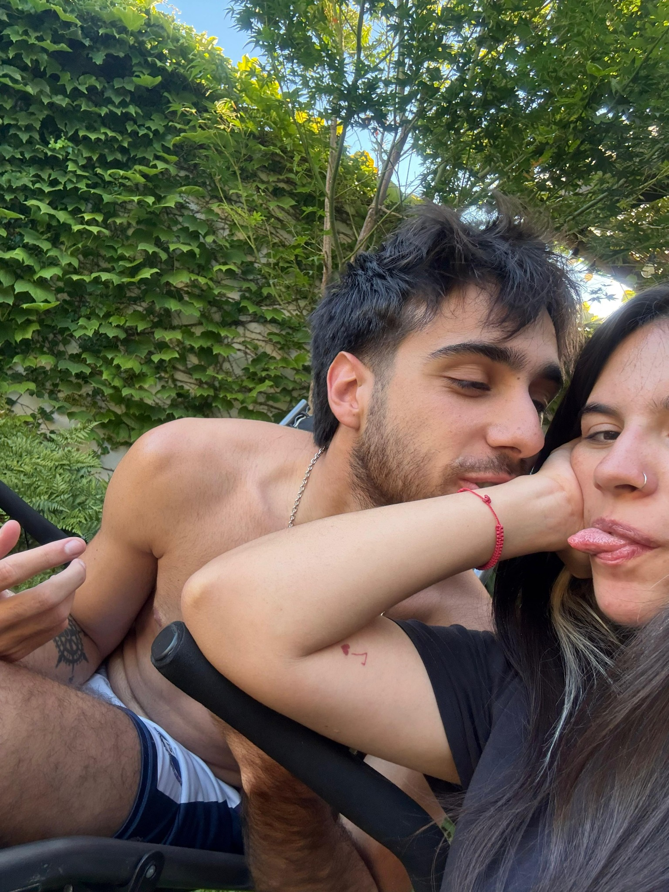
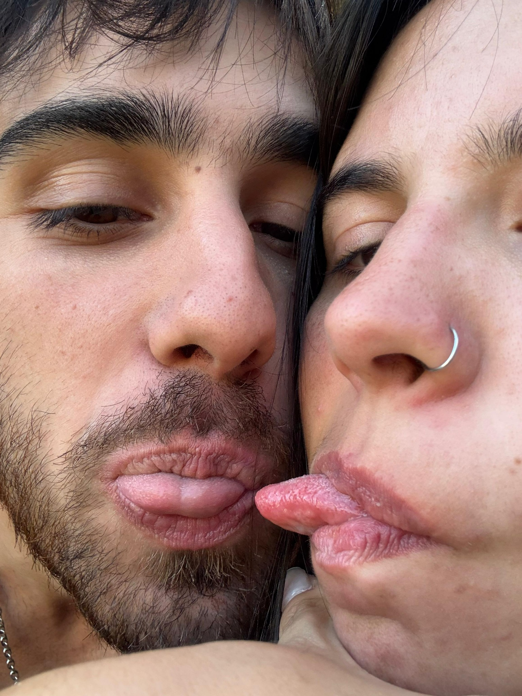
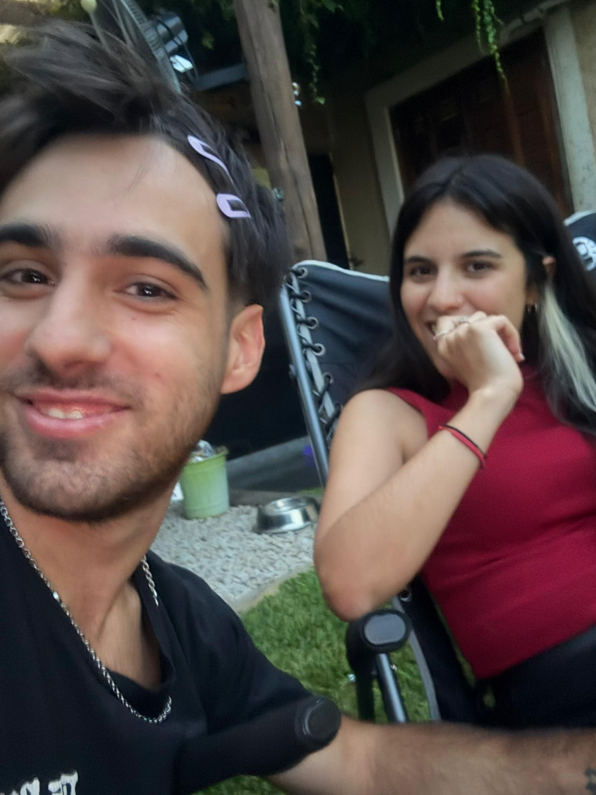

UN RECUERDO
Un pedacito de aquellos días ♡

NUESTRA PRIMERA CASA
Donde empezó a sentirse como hogar
Entre mi familia, tu sonrisa y esos primeros momentos juntos, empezamos a descubrir que estar cerca podía sentirse muy parecido a estar en casa.
♡ Un pequeño comienzo de algo enorme
PEQUEÑOS MOMENTOS, GRANDES COMIENZOS
De a poquito, formabas parte de mi mundo
Quizás en ese momento no nos dábamos cuenta, pero estábamos guardando algunas de nuestras primeras postales de una vida que recién empezaba.
“Conocernos también era aprender a compartir lo cotidiano.” ♡


ESOS DÍAS
Así éramos nosotros 🎬
Sin poses, sin planes, sin saber todo lo que vendría después.
NOSOTROS
Cada vez más nosotros
AQUELLOS DÍAS
Y recién estábamos empezando
UN MOMENTO MÁS
De esos que hoy guardo con cariño
EN CASA
Donde todo se sentía sencillo
EL COMIENZO
Sin saber todo lo que venía ♡
¿Y si esto recién era el comienzo?
Una casa, un perro, algunas plantas...
y quién sabe cuántas pequeñas personitas corriendo por ahí.
Pero eso lo dejamos para otra historia. ♡